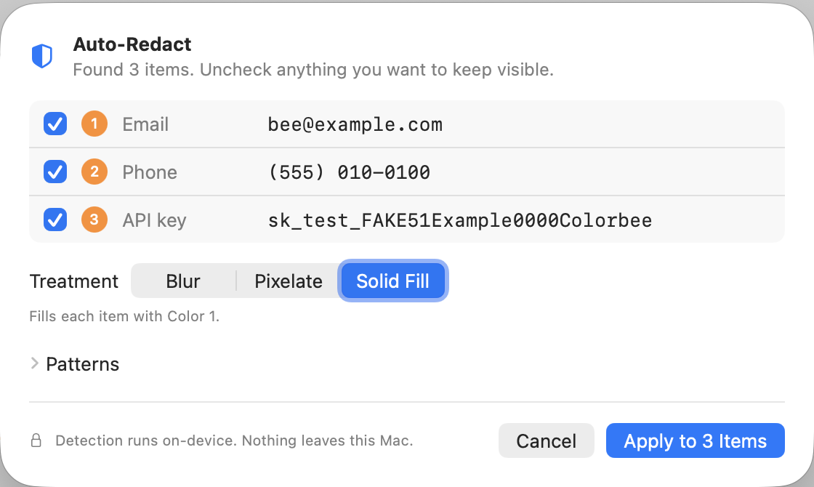
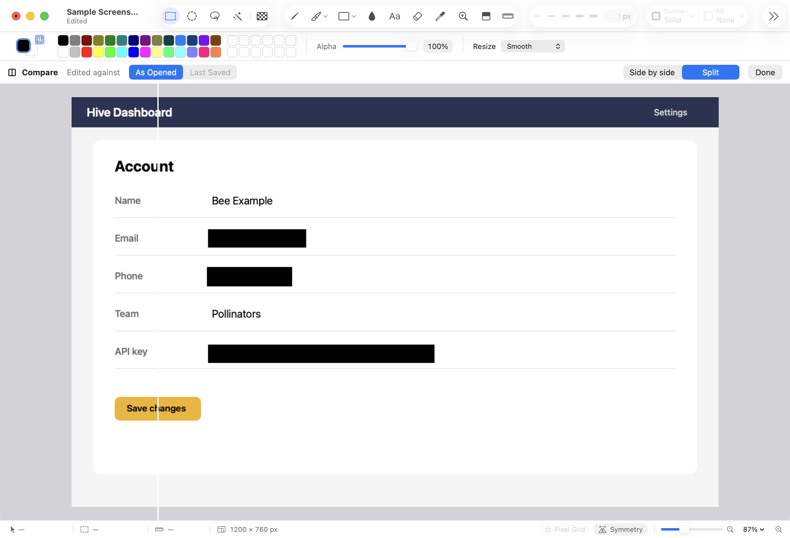

Before you share a screenshot, hide what shouldn't be seen. Colorbee finds the usual suspects for
you, and everything happens on your Mac: Colorbee has no internet access at all.
Step by step
Take a screenshot to the clipboard. On a Mac that's ⌃⇧⌘4 by default (hold Control with the usual screenshot keys).
In Colorbee, choose File ▸ Paste into New Image (⇧⌘V).
Choose Effects ▸ Auto-Redact…, and Colorbee reads the text and lists the email addresses, phone numbers, card numbers, API keys, IP addresses and web addresses it found. Each is outlined on the image.
Uncheck anything you want to keep visible.
Choose a treatment, then click Apply.

Auto-Redact lists what it found before anything changes.
Which treatment?
Solid Fill covers each item with Color 1. It's the safest: nothing can be read back.
Blur and Pixelate look softer, but blurred or pixelated text can sometimes be reconstructed. Use them only when that doesn't matter.
What Auto-Redact checks
The whole image, every page of a PDF, even if part of it is selected. To redact just an area, use Batch Redact (below).
Only what's visible: text on a hidden layer, or covered by another layer, isn't found. Each item is redacted on every layer under it.
You can turn the kinds of text on and off, and add your own patterns, under Patterns in the Auto-Redact sheet.
One ⌘Z undoes the whole Auto-Redact, on every page.
Anything it missed: Batch Redact
Select what to hide. To select several separate areas, hold Shift as you drag each one (or Shift-click with the Magic Wand).
Choose Effects ▸ Batch Redact, then one of Solid Fill with Color 1, Blur… and Pixelate…
Each area is redacted on its own, on every layer under it, as one step.
Check it with Before/After
Choose View ▸ Before/After (⌥⌘B) to compare your image with how it was opened. Drag the divider to see each side.

As Opened on the left, your redacted image on the right.
Copies a redaction leaves behind
Colorbee helps you clean up the places where the unredacted image could still be found:
Clipboard History. If the image is in Clipboard History, Colorbee asks after a redaction: "Remove the unredacted image from Clipboard History and the clipboard?" Choose Remove. This covers the image you pasted from, and copies you made of this image before redacting it.
Earlier versions. When you save a redacted file with ⌘S, Colorbee may say "Earlier versions of this file still show what you redacted." Choose Remove Earlier Versions and Undo History, so File ▸ Revert To and Undo can't bring the original back.
Share it
Save it with ⌘S, or use File ▸ Export… for a copy in another format, or File ▸ Export As for a common size. For a PDF, File ▸ Export as PDF… writes only pixels, so no hidden text survives under a redaction.